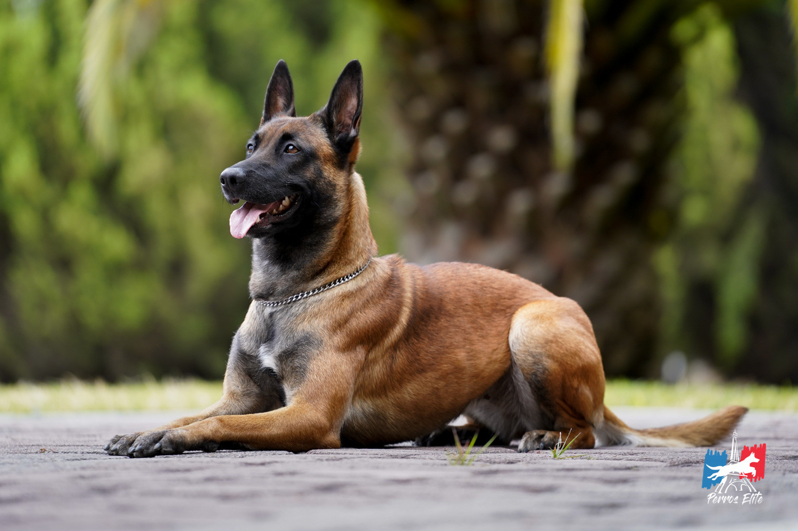

Всем привет!
Хочу рассказать немного о своей собаке!
Малинуа бельгийская овчарка — серьезная, ответственная и очень подвижная собака. Далеко не каждый сможет стать полноправным хозяином этой собаки.
К счастью, я являюсь такой хозяйкой!
Дэзмонд (так зовут моего верного друга), очень сообразительный и прекрасно поддается дрессировке. Он очень активный и обожает бег и игры.
На улице врядли кто-то рискнет к нему подойти, т.к. он всегда подозрителен, даже к ближайшему окружению семьи. Ниже представлю основные плюсы и минусы породы. Но несмотря на все минусы, я не разу не пожалела о своем выборе!
Это самая удивительная собака!
Узнать больше о породе

Малинуа бельгийская овчарка
Это мой Дэзмонд
Плюсы породы:
- Очень умные, сообразительные, обладают хорошей памятью и мгновенной реакцией, быстро обучаются
- Преданные, верные, любят хозяина и членов его семьи
- Обладают крепким здоровьем, почти не болеют, сохраняют активность до старости
Минусы:
- Требуется постоянное внимание хозяина, тренировки
- Нужны высокие физические нагрузки
- Подозрительны к посторонним